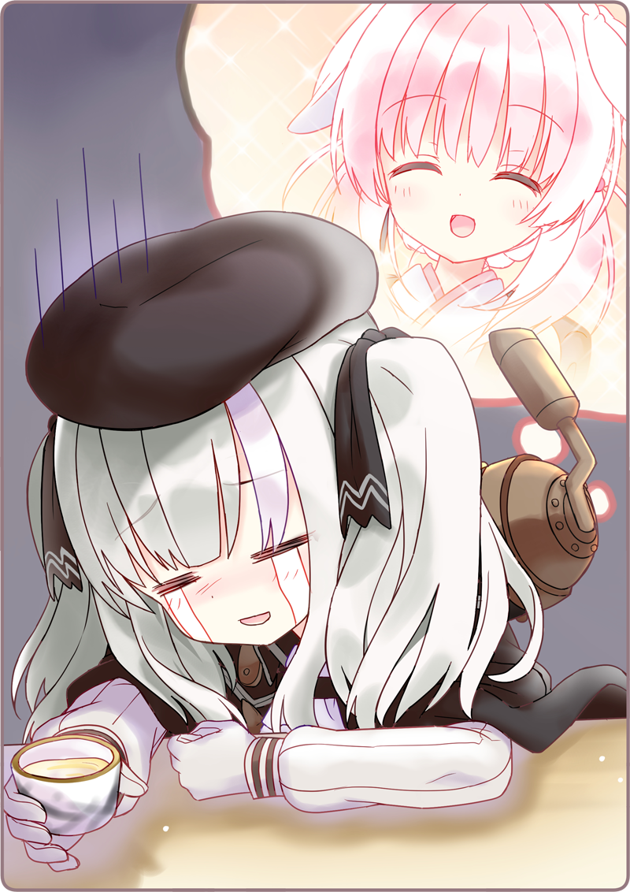

Lúc này Mặt Trời đã khuất hẳn sau núi.
Thời tiết vẫn xấu như vậy, và chỉ mấy phút trước những hạt mưa đã bắt đầu rơi lất phất xuống mặt đất.
Địa điểm tôi vừa đặt chân tới là [Tửu quán Yamae], nơi Houkiboshi-san phụ việc.
Chắc vì trời mưa nên trong quán chẳng có mấy khách.
Tôi và Retzel-san ngồi cạnh nhau trên quầy.
Cô ấy nghiêng chén nhấp một ngụm.
Bên trong là mỡ gà siêu tinh khiết, không gây hại cho Hình nhân.
Usami: “T-Thôi thôi mà, Retzel-san.”
Usami: “Vậy, mời cậu.”
Tôi rót thứ chất lỏng cô đặc màu hổ phách vào chén cho cô ấy.
Một lần nữa, lại một hơi cạn chén.
Usami: “Chà…”
Retzel-san nằm gục xuống bàn mà khóc như mưa.
Tôi đã nhờ Karasuba-san liên lạc với cô ấy thông qua ông chủ trước.
Hình như ban trưa cô ấy còn nhiệm vụ cảnh vệ, nên đã bảo tôi gặp nhau vào giờ này, tại quán nhậu Yamae.
Houkiboshi: “Re-chan, em uống nhiều thế nhiệt đốt mỡ sẽ dâng lên đó.”

Retzel-san lại bắt đầu than trời khóc đất.
Dù có lau bằng khăn ướt bao nhiêu lần thì nước mắt vẫn không ngừng tuôn trào.
Usami: “Ờ thì… em ấy đã nói vậy…”
Usami: “Hở… đến mức đấy cơ á?”
Houkiboshi: “Chị nghĩ em không nên nói xạo những chuyện riêng tư như vậy đâu.”
Houkiboshi: “Chị rót ít nước đây. Nào, không là cạn chất làm lạnh mất đấy.”
Chị ấy lấy ra hai cốc nước đổ đầy đá lạnh.
Sau khi chờ cô ấy làm ẩm họng, tôi hỏi một lần nữa.
Usami: “Vậy, quả nhiên chuyện này… là do Haizakura bị hỏng sao?”
Houkiboshi: “Cũng phải… xem chừng là do cơ quan lý luận của Hai-chan bị hỏng mất một phần.”
Usami: “Nhưng mà, em ấy vẫn nhớ mình, Karasuba-san và Gekka-san kia mà.”
Usami: “Em ấy sẽ quên hết tất cả…”
Houkiboshi: “Nhưng mà Re-chan, chẳng phải lúc về Lobelia là em đã biết trước chuyện này rồi còn gì?”
Usami: “Đ-Đúng là… khó xử thật nhỉ…”
Tôi hiểu tại sao Retzel-san lại đau khổ.
Bị lãng quên quả thật là rất đau đớn. Như vậy chẳng khác nào ngay từ đầu bản thân chưa từng tồn tại cả.
Huống chi người lãng quên lại là ai đó vô cùng quan trọng đối với mình…
Usami: “Có khi nào… vì thế mà cậu không muốn gặp Haizakura sao?”
Usami: “Nếu bị lãng quên thì sẽ cay đắng lắm… nên là…”
Usami: “...... Retzel-san này.”
Usami: “Mình nghĩ, Haizakura không hẳn là đã quên mọi thứ đâu.”
Usami: “Em ấy có nghiền ngẫm một lát, nên tớ nghĩ nó chỉ kẹt ở đâu đấy trong ký ức thôi. Nếu có một động lực nào đó thì…”
Usami: “Mình cũng không chắc lắm…”
Ấy chỉ đơn thuần là điều tôi muốn tin vào mà thôi.
Nhưng chắc chắn, một ngày nào đó em ấy sẽ nhớ lại tất cả, hát được những bài ca em không giỏi, và rồi…
Houkiboshi: “Ôi chao?”
Tôi nghe thấy âm thanh chói tai từ đằng xa.
Là tiếng chuông điện thoại.
Houkiboshi: “A, để cháu nghe cho.”
Houkiboshi-san nói vọng vào trong bếp và nhấc ống nghe điện thoại lên.
Houkiboshi: “Vâng, quán nhậ… a, Kara-chan đó à?”
Usami: “Ơ? Karasuba-san?”
Houkiboshi: “Hừm, hừm… hả?!!! Hai-chan sao?! Mình hiểu rồi… quán cũng sắp đóng cửa rồi nên… hừm hừm…”
Chị ấy đặt ống nghe xuống với một vẻ khó xử.
Houkiboshi: “Hình như Hai-chan đang đến đây đó.”
Houkiboshi: “Em ấy viết giấy nhắn lại, bảo là để mang ô cho Usa-san.”
Usami: “Để em ấy phải lo lắng mất rồi…”
Houkiboshi: “Không, vấn đề không chỉ có thế thôi đâu.”
Usami: “Y-Ý chị là sao?”
Houkiboshi: “Hình nhân mất kiểm soát [Gintarou]... hình như giờ đang làm loạn ở quận Năm. Phố xá ở đó hiện đang bị phong tỏa.”
Usami: “Hả?”
Houkiboshi: “Lỡ như… lỡ như Hai-chan đụng phải…”
Rầm, Retzel-san đẩy ngã cái ghế mà đứng dậy.
Cô ấy quay gót và chạy một mạch ra khỏi quán, chẳng thiết quan tâm mình đang liên tục đạp trúng vũng lầy.
Usami: “A, chờ đã!”
Houkiboshi: “Re-chan… thật là!”
Houkiboshi-san cũng bước ra khỏi quầy.
Houkiboshi: “Mình đuổi theo thôi!”
Usami: “Hảảảả?!”

 “Quả nhiên… là như vậy nhỉ…”
“Quả nhiên… là như vậy nhỉ…”